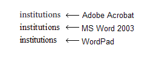
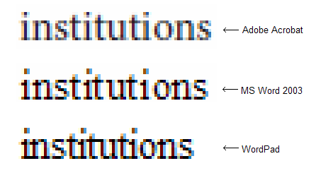
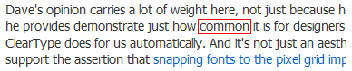
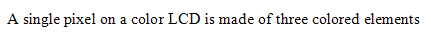
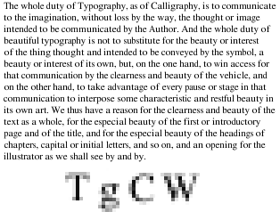
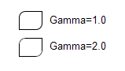
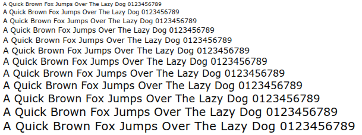

| Home/ |
| Research/ |
|
|
|
|
Texts Rasterization Exposures |
First published in July, 2007 |
Joel Spolsky in his article
|
Jeff Atwood in his blog post
|
My short answer is while Microsoft uses their aggressive hinting there will be no higher than 100 DPI resolutions, period. With the Microsoft approach there is simply no way to break this vicious circle. |
Jeff doesn't like Apple way of text rendering. I don't like it either. But may be Apples' mission is namely to aspire to those “glorious days” of 200 DPI? Well, my bar it higher, it's 300 DPI. I think 200 is not enough to completely discard text hinting. However, in this article I'll make an attempt to “unmask” the Apple way too. The article may look long and boring for you, but I feel I need to carefully analyze the situation in circumstantial details. |
To make it more intriguing I'll leap ahead and show you a few examples. |
Looks blurry? But consider the text size. And consider the fact it remain perfectly readable, smooth and clean at the same time. And at the same time, the letter-forms are fairly preserved (typeface “Arial”). |
OK, how about this one? |
Looks heavy? No problemo, we can make it lighter. |
And two more samples: |
It's the Georgia font. Note that the letter-form appearance is perfectly preserved in both cases; just the last one was intentionally made slightly heavier. |
But it was only a “body show”; the main message of this article is. No more horizontal pixel grid! Really! From now on the horizontal grid is 1/256 of a pixel! You can shift the text horizontally by any fractional value, while the visual appearance does not change a whit! This “little detail” means a lot. How about this: |
|
Sounds impossible? OK, one more sample. |
Look at it carefully, do you see something strange? Each line has a 1/10th pixel shift, so that, in the run of 30 lines it gradually (gradually!) accumulates 3 extra pixels. I'm sure you know how it would look snapped to the horizontal pixel grid, don't you? |
OK, just in case: |
The amazing thing is there is no rocket science! Nothing to patent! All information is publicly available and/or deducible from what we see. You only need to use a bit of your engineering intuition plus common sense. So, it goes. You can download an application with full sources in the end of the article and play with it, but not now, please. Now be patient to read rather a long story. |
I'll start with a tough statement. Microsoft played a dirty trick on the world. Windows XP way of text rendering has zero taste and zero engineering culture. Their text looks sharp and eye catching but wrong. |
Just a simple test. Suppose you have a single line of text printed with “Times New Roman” at a high resolution (say, exactly 1000 DPI). This line occupies exactly 87% of some given distance (say, 5 inches) on paper. Then, we want to see a strictly proportional picture at a low-resolution, say, exactly 100 DPI, so that, our 5 inches would map to exactly 500 pixels. Is there a simple way in Windows to display this text so that, it would occupy exactly 87% of our 500-pixel distance? — No way! It's clearly seen in the following snapshots. They are from Windows XP → Display Properties → Settings → Advanced → General → DPI Setting → Custom Setting. |
They sacrificed the “engineering honor” in favor of money, which resulted in zero technical progress during many years. They use too aggressive font hinting. Microsoft hinting not only distorts the letter-forms, but accumulates a huge error along the text line. As the result the fonts are not freely scalable; they only seem to be scalable but they are not. This fact affects the computer monitor industry. Can you imagine Microsoft Windows XP on a 600 DPI display? Say, 8000x6000 pixels? I can't and not only because of invisible pixel icons, but mostly because of poor text scaling. When you change DPI in the display settings, some dialogs in some software will inevitably be displayed incorrectly. So, where is the motivation? |
You can argue that the software designers have to consider different font sizes. I would agree with it, except for one little detail. Designing 100% correct dialogs is extremely tedious. Free scaling is much better in Windows Vista, but the situation already exists now and it will be a long way to go to fix it. In other words, we can't freely resize the dialog forms. |
A while ago I worked for
Johnson&Johnson (Hello |
Yes, in Windows Vista, with WPF everything becomes freely scalable.
That's the good news. The bad news is it's still impossible to use
high resolutions. The problems are clearly described by Long Zheng and Jim Mathies: |
In Microsoft Word, as a WISIWIG system, it is mandatory to preserve the accurate layout at any resolution. It means the layout must be freely scalable, and it is scalable. But let me undertake a simple investigation. Below there is a text as it looks in Microsoft Word Office 2003. There's no necessity to read it, just take a general impression. |
|
And compare it with how it looks in the Adobe Acrobat Reader: |
|
You can see the difference better if you download these pictures and
switch between them with some slideshow program. I use nice and free
|
|
In our case the “signal bandwidth” is about the “sampling frequency”. Practically it means that you cannot properly display a bunch of vertical lines, sharp and with the equal intervals at the same time, unless the intervals are multiples of a pixel. Whether the distance between the lines will vary, or some lines will look blurry. There is no other choice, period. |
Pierre Arnaud demonstrated it more clearly: |
Assume that you output a glyph for the letter "i" which is exactly 2.4 pixel wide. If you grid-fit it using the hinter, you'd probably get a 2 pixel wide shape. Assume that a space measure 4 pixels. Now, imagine you display "iiiiiiiiii" (ten times the "i" glyph). This would produce a word which occupies 20 pixels on screen, yet the typographic position should move by 24 pixels. You end up adding 4 pixels to the following space, which doubles its size. This will look strange on the screen. Worse, if the "i" glyph measures 2.6 pixels, and the hinter decides to grid-fit it to occupy 3 pixels, you'll occupy 30 pixels on screen whereas the typographic position only advanced by 26 pixels. This time, you get a -4 pixel error which completely eats away the space. Another approach would be to position the "i" glyphs by rounding their typographic position, which would lead us to use the following x coordinates in the 2.4 pixel wide case: x = 0 ----> 0 error = 0 width=2 x = 2.4 --> 2 error = -0.4 width=3 x = 4.8 --> 5 error = +0.2 width=2 x = 7.2 --> 7 error = -0.2 width=3 x = 9.6 --> 10 error = +0.4 width=2 The result is ugly : .*.*..*.*..* ............ .*.*..*.*..* .*.*..*.*..* .*.*..*.*..* .*.*..*.*..* You get the idea... The "i" glyphs appear at irregular intervals. |
Yes, they do. They do appear at irregular intervals in MS Word. |
So, Microsoft does not allow for sub-pixel positioning, while Adobe does. It means that the same glyphs at different positions may produce different pixel result. It is clearly seen with the word "institutions", marked with the red rectangles in the snapshots above. |
  |
Take a look at Adobe's glyphs “i”, “n”, “s”, “t”. There are at least two versions of them in different positions. And this is why text in Adobe looks more consistent, but more blurry. |
Now, if you type the very same word “institutions” in WordPad, the result will be different and it does look much better. So, why in MS Word it looks worse? — Only because of the visible inaccuracy in positioning. Function TextOut(), that is probably used in WordPad does not care about it, but MS Word has to. I'm not sure, but probably the MS Word developers calculate the glyph advance at a high resolution for “unhinted” glyphs. With the public Win32 API the only way to do that is to call GetGlyphOutline() with a heavily zoomed affine matrix, so that, the resulting glyph would fit 1024x1024 box or something like that. Otherwise the advance value will be inaccurate since it is measured in integral pixels. The direct use of it produces exactly the same result as in TextOut(). It looks good, but accumulates a significant error along the text line (more than the whole symbol position within only one word!). |
In the dialog boxes they think it is fair to ignore preserving the text width. Why? — Because otherwise the captions, menus, dialogs, and so on, wouldn't looks so pretty! They would have the very same problem with “randomly distributed kerning”, which would be bad for business. So, nice looking and sharp text in the dialogs is good for business, but it accumulates huge inaccuracy in the text width, which makes it impossible to change the dialog size, which makes software vendors rely on 96 DPI. So, it goes, we have a circulus vitiosus. Eventually it turned into a big profanation. |
From the fair engineering point of view there must be some reasonable trade-off between the sharpness and functionality. The problem is Microsoft concentrated on the glamorous look but completely sacrificed the functionality. The paradox is at 300 DPI or more you don't need any hinting at all and any text becomes freely scalable (after 600 DPI you can do without anti-aliasing). But you can't use your software at 300 DPI because it's designed for at most 100 DPI! This is the price the world pays for this glamorous look. The price is too high, just incredibly high. |
However, even 5 (five!) years ago it was technically possible to have freely scalable forms and dialogs. All we needed is allow for a certain degree of blurriness, very subtle, not like in Mac OS X. Like in Adobe's products. Windows people do not like Safari for too blurry output. I partially agree with them, except for blind refusing any other ways of rendering but Windows. This “fanboyism” is reckless. It is equivalent to saying “I don't care about the resolution, I just want to have my 96 DPI for ever, with the Windows-style text, and so, I vote for stopping the progress.” Is that clever? |
I'm not advocating Apple because I do not like Apple rendering either. To me it really looks too blurry. It looks like they use some kind of a strange auto-hinting that blurs horizontal strokes, but does not offer any advantages. In fact, their hinting looks lousy. It especially looks bad with the sans-serif group of fonts, as if they intentionally shifted sharp text by 0.2…0.5 pixel. This is really why windows people do not like Safari. But at the same time many of them happily use the Adobe Acrobat Reader and do not buzz. It's because the text looks appropriate there (I'm not saying it's perfect, I'm saying it's appropriate to windows fans). And it remains freely scalable! — just load any document and gradually zoom it in/out. The text layout remains fully consistent and has proper kerning at the same time. So, yes, I would vote for the Adobe way of rendering, because their trade-off seems to be very close to the optimum. |
Jeff Atwood |
The irony is that Microsoft already uses sub-pixel positioning in glyph hinting! There is even more irony because it is clearly seen on Jeff's pages with the font he uses. |
 |
Look at it carefully — word “common” marked with red above, letter “m”. |
 |
Then, with simple programmatic manipulations, I converted the colors into a
3-x grayscale bitmap: |
And then, I “alpha-blended” it in RGB, interpreting the channels as
individual gray pixels. I did that 12 times with 1 gray-pixel offset, which
eventually gives us the 1/3rd pixel offset in RGB. See what happened: |
It namely means sub-pixel positioning. You can easily make sure it does — in the run of 12 lines it accumulates 4 extra pixels, keeping perfectly even and smooth “boundary”. Well, the lines are slightly different, but you have to closely stare into the picture to notice it (I have 100% clear vision without glasses.) Trust me it's a very low price for the freedom of accurate sub-pixel positioning! So, it goes. It's quite possible. Why didn't you use sub-pixel positioning, dear Microsoft? Give us an answer. — No answer. |
Another big question is about the definition “Microsoft ClearType Font Collection”.
Why do they call it “ClearType Font Collection”? So, the “ClearType-ness” is
heavily bound to the typefaces? Again, it sounds like a heavily customized ad-hoc
solution, so, not every font can be successfully used with ClearType. Below I'm
going to show you that with the |
Jeff also mentions the |
 |
They align the stems to pixels and ignore vertical hinting. You see, symbols “T”, “W”, “C” and “g” are significantly “out of focus”. Besides, “W” looks heavier. |
To me it looks sloppy. It's supposed to be “Times New Roman”. Does it look so? — No, it looks like a simple bitmap font. So, what's the point? — Isn't it better just to accurately encode it as a number of real B&W pixel-maps? What's the point of anti-aliasing if we afford to discard the letter-forms? Besides, it looks like the text has “blots”, as if you wrote it with ink on a soft napkin: most of the time the strokes are good, but sometimes they smear. Anyways, the problem remains the same: whether you discard the accurate text layout, or have inconsistent kerning. |
I want to mention Safari again. I can't state it for sure, but it looks like Mac OS people do not use sub-pixel kerning either, which practically means the very same problem I'm blaming Microsoft for. With the Safari way it would be very possible to have more accurate positioning while preserving accurate layouts. But it looks like they also rigidly snap symbols to pixels, no matter how blurry they look. So, what is their mission? To render blurry text only in order to make people buy higher resolution displays?! It's an unfair game! |
Below you will see how to achieve a pretty looking and accurate result with
relatively simple manipulations. I did that with the |
The Windows way of text rendering is bad, the Linux way is much worse.
In all Linux systems I've seen they use |
The full screenshot is here: |
The apparent problem is very visible “dirty blots” in the round corners introduced by anti-aliasing. In general, we can say that the oblique strokes look heavier than the stems, which gives you an impression of dirt. You can argue that the FreeType and Linux can use a similar to ClearType RGB sub-pixel rendering, but to me it doesn't look any better. |
Look at “W”, “v” and “y” — the problem is essentially the same; these symbols look dirty. |
It's possible to improve the corners with gamma correction when rendering, but still, it's impossible to achieve perfect consistency. |
Gamma correction works like this: |
 |
As you can see, the round anti-aliased corners look much better with gamma=2.0.
Gamma correction is a separate and non-trivial topic and if you wish you can find
comprehensive information in the |
In our case it's not about those signal-response curves in the electronic circuits, but mostly about the specific of the human vision. The visual response is approximately proportional to the square root of the physical luminosity. In other words, if there are two white pixels on black, and one of them emits exactly two times more photons per second, it won't look two times brighter. It will be about 1.4 times brighter. You can easily check it: |
On the right there are two pixels and we can credibly say that they emit two times more photons pre second than the pixel on the left. However they do not look two times brighter. Four pixels will look about two times brighter, not two. |
Skipping all other explanations, we can say that there are two major RGB color spaces: perceptually uniform, which is called sRGB, and physically uniform. In the latest, the physical luminosity is proportional to the value, unlike sRGB, where the perceptual response is proportional to the value. Often the physically uniform space is called just “linear RGB”. When using anti-aliasing, the color compositing must be done in the linear space, but before displaying you have to convert the resulting image to sRGB. However, very often it's ignored and anti-aliasing is calculated directly in sRGB. In many cases it produces quite appropriate result, but it becomes critical for text rendering. It also can be clearly demonstrated in Microsoft Word. The thing is they use some trick for the text selection, something like trivial color inversion, instead of re-drawing the whole text. And so, if the normal text is rendered with the correct gamma, the selected one has the inverse gamma. With regular, grayscale anti-aliasing, the selected text looks dirty; with ClearType it also becomes very “color fringy”: |
So, in Windows there is proper gamma correction (but not for the selected text!), in Linux they often (always?) ignore it. With FreeType it is easy to apply gamma to the grayscale anti-aliasing mask that the rasterizer produces. But it will work in the very same way like in Windows: inverting the colors will invert the gamma. It's practically useless because gamma must be applied to each color component separately when blending (which, in turn, is equivalent to working in the linear RGB space). Gamma correction for the grayscale mask works well only if you draw black text on white background. In this case you can use value about 2. But when drawing white text on black, you have to inverse the gamma, that is, use value about 0.5. The problem is you do not know in advance the background and text colors; the text can be drawn with a gradient over an image. So, the “grayscale” gamma correction doesn't work, but the “full-color” gamma may be expensive and tricky. The problem is linear RGB requires more than 8 bit per channel, otherwise you will inevitably have color loses. For the text it's tolerable, but you don't have the right to require it for the entire desktop! And working in the loss-less linear RGB requires 16 bits per channel, which is still unaffordable luxury. |
The situation is even worse. You can apply gamma=2 to the Linux screenshot in Irfanview (Image/Enhance colors…) and look at the text. Please try to ignore the fact that the pictograms look too "whitish", concentrate only on the text. |
Do you like it? I still don't. When I was working on text rendering in AGG, I though that proper gamma correction should solve all the problems. Nothing of the kind! No matter how well it works, some elements look thicker, some others thinner than the vertical and horizontal ones. It's especially visible with the sans-serif group of fonts, and especially, when the strokes are strongly aligned to pixels. The problem is TrueType hinting for small glyphs was designed specifically for a regular, aliased B&W rasterizer! The use of anti-aliasing of any kind is inappropriate, while most Linux people do namely that. The picture below is the result of anti-aliased rasterization with both, FreeType and Win32 GetGlyphOutline(). |
The text looks lousy and it is very similar to what we have in Linux in most cases. It's impossible to fix the situation with any kind of gamma correction. For example, the best I could achieve is use gamma=1.5. It still looks bad: |
By the way, you must have noticed that after certain size the text abruptly becomes heavy. This is namely what happens in Windows. If you turn off the ClearType feature for a while, it will be clearly seen (the text size is not exactly preserved). |
So, you got the idea. To make it more convincing, we can zoom in the vector data returned by WinAPI GetGlyphOutline() and see what happens. |
This is how the patented aggressive hinting works for the nominal size of 13 pixels. This is why the strokes in “k” look so fragile, almost invisible. In Times New Roman Italic it's even worse; the “slash” in “z” completely disappears. This distortion does not affect the regular “aliased” rasterizer, but the one FreeType uses is sensitive to these things. It directly computes pixel coverage values, so, it fairly produces zero coverage at the “slash” of “z” when processing this zero-area degeneracy. So, it turns out it does not make sense to interpret the TrueType hinting byte code (not to mention you have to buy a license for that). Anti-aliasing is good, but it must not be a “thing-in-itself”. Anyway, I would prefer to see regular, aliased text, rather than anti-aliased, with inadequately used hints. |
In FreeType-2 David Turner introduced the auto-hinting mechanism. It works fairly well, but still, the direct use of it produces a far from the perfection result. Look at the result of rendering Verdana font with gamma=1.5: |
Compare with the unhinted version: |
The unhinted version definitely looks more consistent, but too blurry. There are three major differences. |
|
The auto-hinter works better with fancier typefaces, like Times New Roman, but still has the very same positioning problems. |
Leaping ahead I'll show you one more sample. |
 |
It really IS possible to find a reasonable solution. But first of all, you have to agree that there is no way to use any kind of hinting for absolutely exact text layout representation with any zoom factor, period. Only unhinted text, with its natural blurriness. However, we can improve it and we have something to sacrifice. Namely, we can afford some inaccuracy in the vertical positioning and the text height. After all, the TrueType hinting works in the very same way: the lines of text with, say, 12, and 13 pixels nominal heights have exactly the same pixel heights, but still look differently. |
So, in short words, for the nice looking text with accurate horizontal positioning we need the following. |
|
Slight gamma correction may improve the result, but it's not mandatory. The text looks good enough even in direct sRGB, which means there are no potential problems when using inverse color schemes. |
You can easily achieve a nice result with FreeType and its auto-hinter. It means that you don't have to worry about licensing the native TrueType hinting. With Win32 GetGlyphOutline() it is more tricky, but still possible. |
You can find the comprehensive guide how to use the RGB sub-pixel
rendering on Steve Gibson's pages, |
I also wrote a simple, "quick and dirty" pixel renderer for AGG that can be found in the demo examples below. The code is unsafe and rather slow. It's OK for the demo application, but don't use it in a real project, in particular because it uses a temporary buffer for at most 2048 pixels in the stack. |
Basically, all we need is the per-channel alpha. In this file, agg_pixfmt_rgb24_lcd.h. I also perform additional blurring Steve Gibson describes. It's performed on demand, but obviously can be pre-computed and used with a cache mechanism. In this case it will work much faster, at least, not slower than the regular alpha-blend. |
To debug the per-channel blending I used a modified
|
To keep vertical hinting but discard horizontal we simply cheat the hinter. We stretch the symbols horizontally so that, the hinter would have to work with high accuracy in the X direction. The only problem is the AGG font engine for FreeType uses the inaccurate advance value, considering hinting. Technically, the hinter should calculate accurate advances for heavily stretched glyphs, but for some reason it does not. So, to use with exact, “unhinted” advances I had to modify it. The modified version is in the demo example. After the glyph outline is acquired we use an affine transformer to shrink it back. Basically, that's all we need. The kerning table has accurate enough values. |
So, I want to ask David Turner, maybe it makes sense to add an option to his auto-hinter that would modify the Y-direction only, completely discarding the X coordinates. It even can be a special, 1-D hinter that is supposed to be much simpler than the existing one. As you will see, the text with the RGB-sub-pixel blending looks pretty much like in the Adobe Acrobat Reader, at least to me it does look much better than in a typical modern Linux system. I do believe it will promote Linux systems and advantage their popularity. |
In Windows, the use of their API is significantly trickier. Function GetGlyphOutline() returns the advance value in integral pixels, which is too inaccurate. Stretching doesn't help. There are also functions like GetCharABCWidthsFloat(), but they are useless because they calculate the values for the hinted glyphs and despite the fact they formally contain floating point values, they actually remain integers. So, I couldn't find a simple way of getting accurate advances. I ended up with using two fonts simultaneously, one for nominal height of 1024 pixels, and the other for the given size, with hinting and a “stretched” affine matrix. I admit, I could miss something, but I have no idea how to do that more correctly. In the Microsoft Word they may use some undocumented functions, which would be totally unfair from the competition point of view. I'm not sure of course, but the situation makes me think Microsoft intentionally does not provide a good enough API for WISIWIG page making tools. It's a typical monopoly approach that results in progress stagnation. |
It's even worse than that. The patented hinter does not work with a “stretched” matrix! At least, I couldn't find any scaling coefficient that would correctly process the glyphs. Only scaling 1:1 works correctly, but it results in the very same problem that dictates the use of a B&W aliased rasterizer: |
Looks like crap, doesn't it? Any other scaling ratio results in heavily distorted glyphs, like this one (Times New Roman Italic, 16-x horizontal stretching): |
 |
Or, even like this (Arial, 100-x horizontal stretching — nice leaking, huh? But unreadable.) |
Needless to say that the FreeType auto-hinter works just fine with any stretch ratio. |
It looks like Microsoft API is a huge set of ill-considered random ad-hoc solutions, with no engineering culture and no any common idea behind. Typically you can use Microsoft software only in one rigidly straightforward way. Step to the left or step to the right — and you fail. I admit it might be good for business, but it's unfair. It prevents others from fair competition and stops the progress. The anti-monopoly committee should take into account namely this situation instead of ridiculous requirements to remove the Media Player or Internet Explorer from Windows. |
So, eventually I found out that value 16 is the least evil; it works in most cases, but still fails on “Times New Roman Italic”. |
So, here it is, the Windows application with sources that uses FreeType: |
The one uses Win32 API: |
The FreeType version requires the following font files to be found in the current directory: arial.ttf, ariali.ttf, georgia.ttf, georgiai.ttf, tahoma.ttf, times.ttf, timesi.ttf, verdana.ttf, verdanai.ttf. You can find them in the Windows/Fonts directory. |
If you want to compile it you download AGG v2.4 or v2.5, and unzip the files somewhere like agg-2.4/research/win32/trutype_lcd/*.*. For the FreeType version you also need to build the FreeType itself and probably adjust the settings in the project. |
It also can be built for Linux/X11 or another system if you write a Makefile, similar to the ones used in the AGG examples. |
The text with the FreeType and WinAPI versions look differently because of different hinting algorithms. |
You see a lot of controls here. First, you can switch between the fonts and control “Kerning”, “Hinting”, “Grayscale/Sub-pixel” rendering and see the inverse image (white on black). |
The “Font Scale” slider just uses this ratio to gradually change the size. You see, with hinting, the lines are snapped to pixels, but the text width still changes absolutely gradually. You can see it better changing “Interval”. Without hinting the appearance of the layout is exactly preserved at any scale, but the text looks blurry. Snapping the lines vertically is the most reasonable trade-off between the sharpness and general appearance of the layout. It's just surprising how much the vertical hinting improves the quality at the same time preserving the letter-form appearance. |
The “Interval”, “Width”, and “Faux Italic” sliders are obvious and do not require explanations. It's apparent to people skilled in the art that they are just trivial affine transformations. I only want to mention that “Faux Italic” works slightly differently in the “Grayscale” and “RGB-Sub-pixel” modes, simply because I'm too lazy to calculate it properly with arctangents. It's trivial and immaterial, anyway. |
The feature I'm especially proud of is “Faux Bold” that works like this: |
There is also a simple trick. AGG has conv_contour tool that allows you to calculate an equidistant polygon to the given one. But the direct use of it produces a very blurry result that also considerably changes the letter-form appearance (it might me good for glow and shadow effects, though): |
It's easy to avoid the blurriness, if we stretch the glyphs vertically, say 100 or 1000 times, calculate the equidistant polygon and shrink them again. So, eventually the Y coordinates change very little; and it's practically invisible. The text remains sharp. In the demo there's a pipeline class “faux_weight”. Once again, it's amazing how many extra capabilities free horizontal scaling gives you. And it's amazing how vertical snapping improves the result. |
One more example: (I love this freedom) |
It's the very same “Georgia” font, just programmatically transformed. Perfectly readable, sharp and smooth at the same time (well, I agree that it requires custom kerning). |
Or, the very same with "Tahoma": |
 |
Slider “Gamma” controls per-component gamma correction. Theoretically, you have to apply the "Direct Gamma" to the source colors, and then, after the scene is drawn, apply the "Inverse Gamma". But since the text in these examples is always black or white, the first operation does not make any difference. |
Slider “Primary Weight” controls the energy distribution exactly as on
Steve Gibson's page: |
The demo applications are slow. Partially because of a lot of vector operations performed on-the-fly, but especially because WinAPI GetGlyphOutline() is ridiculously slow. However, it can be as fast as any kind of hardware accelerated text output. But first, you have to agree that it's extremely difficult, almost impossible to accelerate arbitrarily transformed text keeping hinting, accurate layout and perfect RGB-sub-pixel quality at the same time. “Arbitrary” namely means arbitrary, including perspective and any non-linear transformations. |
Most of the times we have to deal with regular horizontal text, even using East Asian
languages. And most of the times the glyphs have equal nominal size. It means that
some caching mechanism is a must here. The RGB-sub-pixel gray mask takes 3 times
more space, but at the same time it allows for 1/3rd pixel positioning. It works
fairly well in most practical cases. Only for hypothetical “luxury” rendering you
can use two grayscale masks per glyph, which gives you the 1/6th pixel accuracy.
Even pure software alpha-blending works fast enough; about 2-4 microseconds per glyph
on modern Intel or PPC processors. With video hardware acceleration it may work much
faster if you upload the textures. The only problem is the hardware must allow for
using per-channel alpha blending, which, as I heard, is possible. At least,
David Brown mentions about it in his
|
|
 “Font smoothing, anti-aliasing, and sub-pixel rendering”
“Font smoothing, anti-aliasing, and sub-pixel rendering” sample_arial_1tenth_int.png
sample_arial_1tenth_int.png linux_screenshot01.png
linux_screenshot01.png (truetype_test_02_ft.zip)
(truetype_test_02_ft.zip)